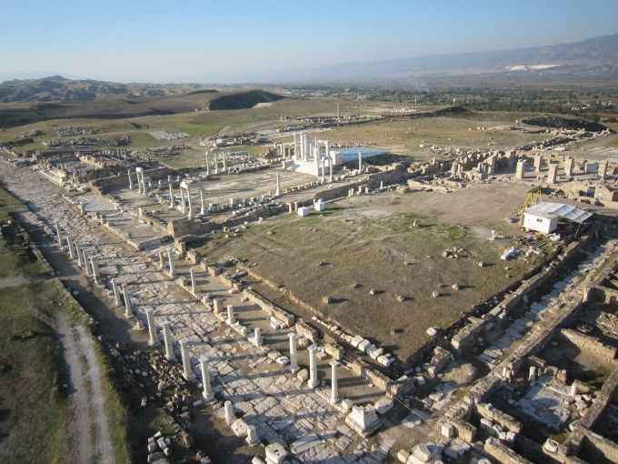

Laodikeia Antik Kenti, Denizli İli’nin 6 km. kuzeyinde yer almaktadır. Helenistik kent, M.Ö. 3. yy.’ın ortalarında Seleukos Kralı II. Antiokhos tarafından karısı Laodike adına kurulmuştur. M.Ö. 130/129 yılında ise bölge tamamen Roma’ya (önce Cumhuriyet, sonra İmparatorluk) bağlanmıştır. Hıristiyanlığın ilk 7 kilisesinden birine sahip olan kent, Erken Bizans Dönemi’nde metropollük seviyesinde dini bir merkez haline gelmiştir. Laodikeia’da yapılan kazı çalışmaları, Erken Kalkolitik Dönem (Bakır Çağı, M.Ö. 5500’den M.S. 7. yy.’a kadar kesintisiz yerleşimlerin varlığını ortaya koymuştur. Laodikeia, önemli arkeolojik kalıntılara sahiptir. Yaklaşık 5 kilometrekarelik alana yayılan Laodikeia’nın önemli ve günümüze kadar gelebilen yapıları içinde; Anadolu’nun en büyük stadyumu (ölçüleri 285x70 m.), 2 tiyatrosu, 4 hamam kompleksi, 5 agorası, 5 nymphaeumu, 2 anıtsal giriş kapısı, Bouleuterionu, tapınakları, Peristylli evleri, Latrina, kiliseleri ve anıtsal caddeleri sayılabilir. Kentin dört tarafını ise nekropol alanları çevirir. Laodikeia, Hıristiyanlık dünyası için çok önemlidir. Çünkü kent M.S. 4. yy.’dan itibaren Kutsal Hac Merkezi olma gibi dinsel bir özelliğe sahip olmuştur. Bu nedenle İncil’de adı geçen ve Laodikeia Kilisesi adına vahiy gönderilen bir kentte Laodikeia Kilisesi’nin ortaya çıkarılması, bu kutsallığı bir kat daha artırmaktadır. Kilise, Büyük Constantinus zamanında (M.S. 306-337), Hıristiyanlığın M.S. 313 yılında Milano Fermanı ile serbest olmasıyla birlikte yapılmıştır. Bu yönüyle Hıristiyanlık dünyasının en eski ve en önemli kutsal yapılarından biri olma özelliğini korumaktadır ve bu nedenle yapı bir hac kilisesidir.
